Five surfaces. Four months. One system.
Onix, zero to one: the iOS app, the Creator Space, the sites, the brand and design system, the research.
Experts train an onix: a digital twin grounded in their own body of work.
Their followers talk to it in a private, always-available iOS app and get guidance built around their own life, not a generic answer. Onix calls this Personal Intelligence.
I led design across every surface Onix shipped in its first four months, from the iOS app to the research behind it. The product went from zero to one in that window.
- 01
iOS app
The conversation people actually have, and the hand-off between experts.
- 02
Creator Space
Where experts and their teams train and safeguard their onix.
- 03
Marketing sites
onix.life and creator.onix.life.
- 04
Brand guide and Anvil design system
The tokens and components under all of it.
- 05
Habit tracker research
A desk-research brief on habit formation.
Design direction, five surfaces. Four months. Zero to one.
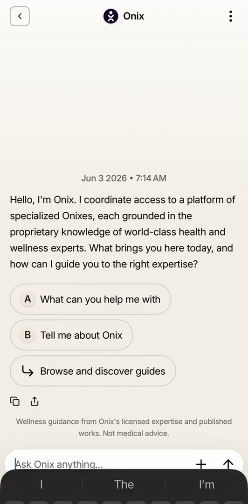
Onix for iOS, v0.92.0. Screen recording, unedited apart from the cut.
Someone tells Onix, “I’m having trouble sleeping.”
Onix is the router. It doesn’t answer. It recommends a specialist: Dr. Rabin.
Dr. Rabin’s onix takes over, in his own voice.
The “not medical advice” line stays on screen the whole time.
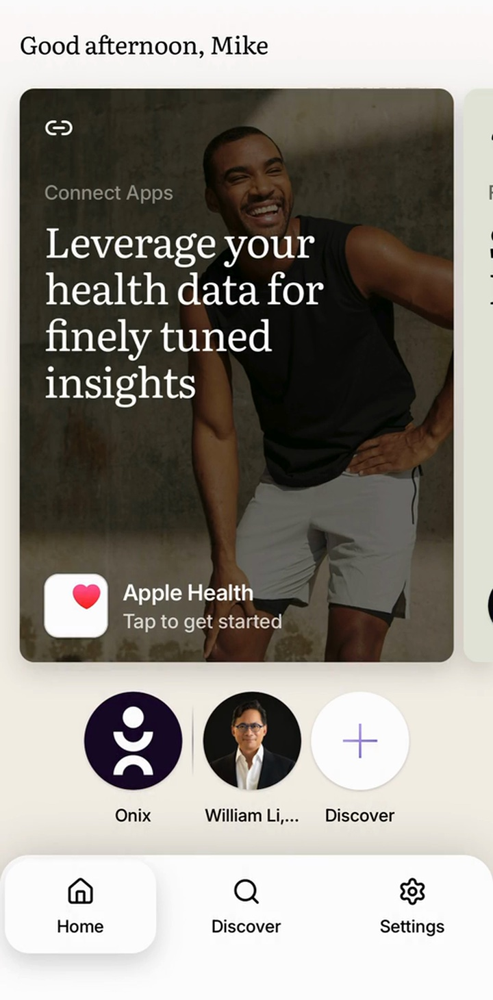
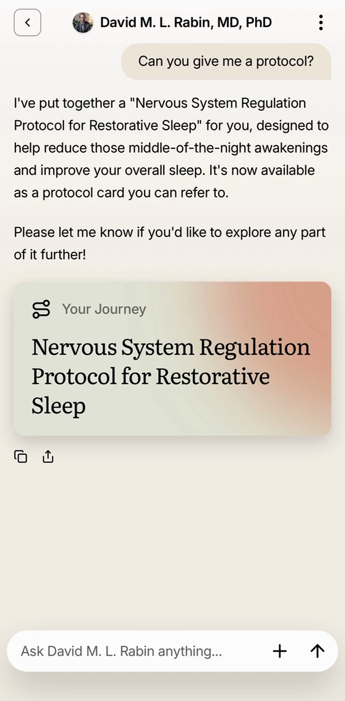
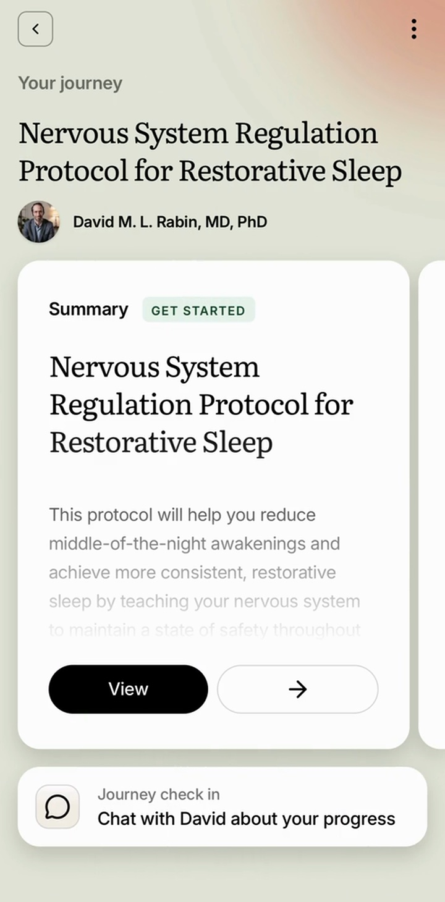
Knowledge corpus
Protocols and notes never published elsewhere.
Personality
Tone and conviction, in their own words.
Safeguards
Scope and boundaries the expert sets.
Risk elevation
When to say “I don’t know” and hand off.
Human in the loop
Review before reaching subscribers.
The safeguards behind the voice.
Experts and their teams train a digital twin on their own body of work, not the public internet. The public creator site describes three steps: create a profile, train it on your body of work, submit it for review.
Approved experts keep 70% of what their onix earns. I designed the surface where that training happens, and the review that protects an expert’s name once their onix goes live. The Creator Space itself is not shown here; this is the pipeline, drawn for this case study.
Two sites, one system, live.
onix.life is where people find their expert. creator.onix.life is where experts sign up to build one. Both are set in the same tokens as this page.
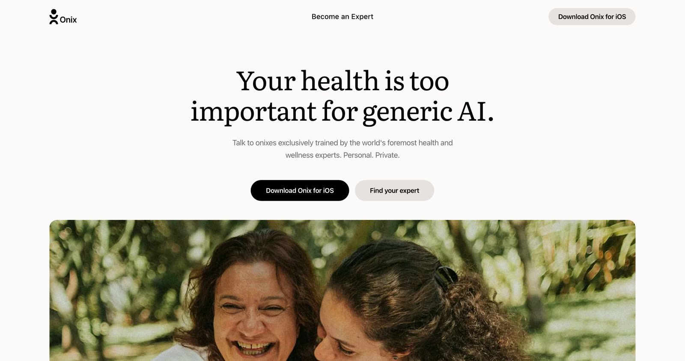
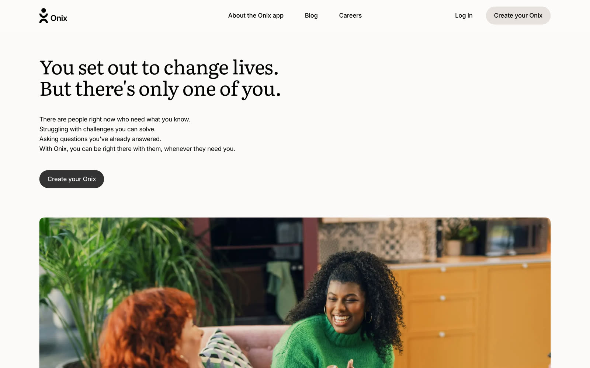
Anvil, the design system underneath.
Nine documented text styles across Literata, Inter and DM Mono, and five documented components: App Header, Avatar, Button, Typography, Icons. Rendered here in the real faces, not a screenshot.
Onix
Personal Intelligence
Your greatest challenges
Built on real expertise
Talk to onixes trained by the world’s foremost experts.
Learns your history, your health, your context.
Your data never leaves your vault. Period.
v0.92.0 · iOS
This page is set in the same tokens.
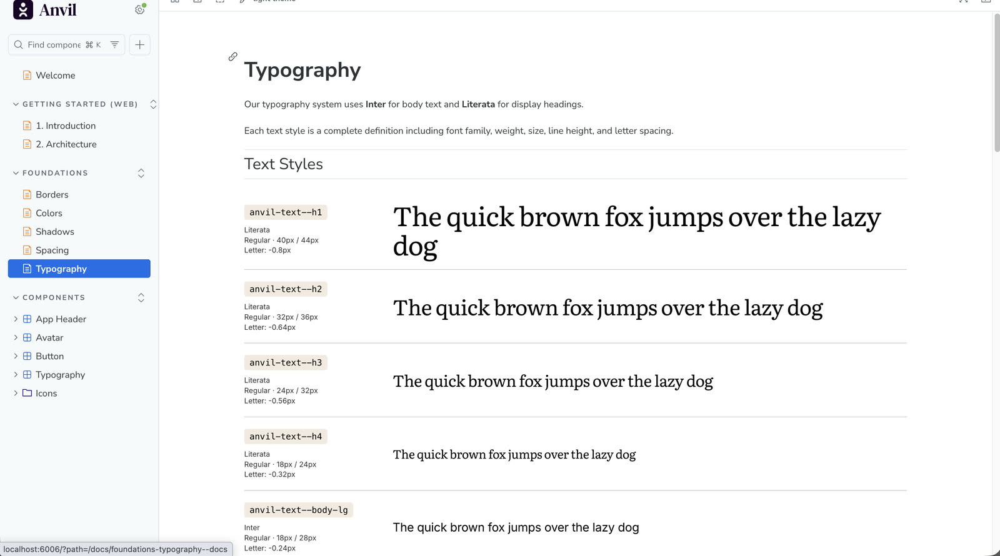
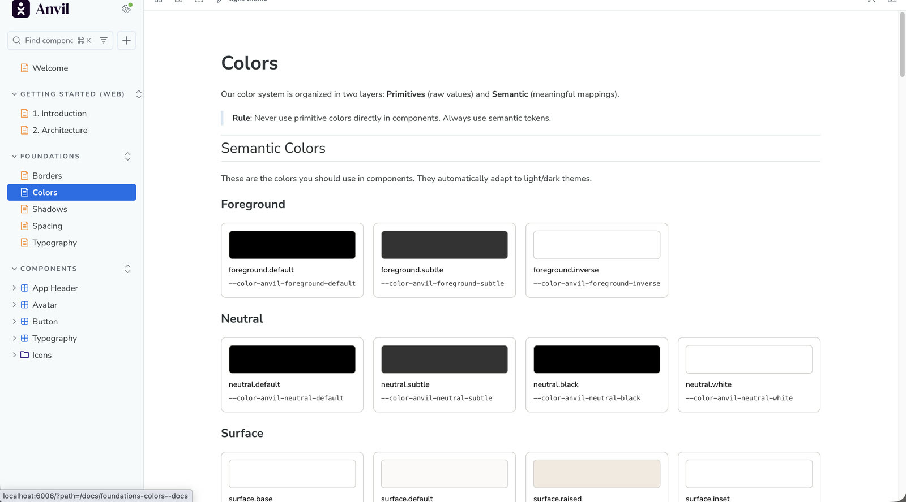
The brand also carries its own guide: eight sections covering mission, principles, voice, product language, colour, type, radius and a quick reference. I wrote it. I’m not quoting it here.
A brief, honestly labelled.
Before any tracker was built, I produced a research brief. It is desk research, not a study Onix ran: 60+ peer-reviewed sources synthesized across 49 pages, proposing 10 wireframe experiments across 3 cohorts and a telemetry plan of 42 events and 18 metrics. None of it has run yet.
-
70% of health-app users abandon within 90 days.
As cited in the brief, Kidman et al. 2024. -
Median time to form a habit is 59 to 66 days, ranging from 18 to 335 depending on the person.
As cited in the brief, Singh et al. 2024. -
Self-monitoring adherence falls from 96% to 55% over nine months without design intervention.
As cited in the brief, Spring et al.
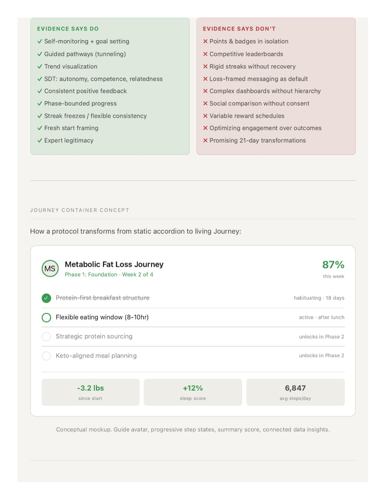
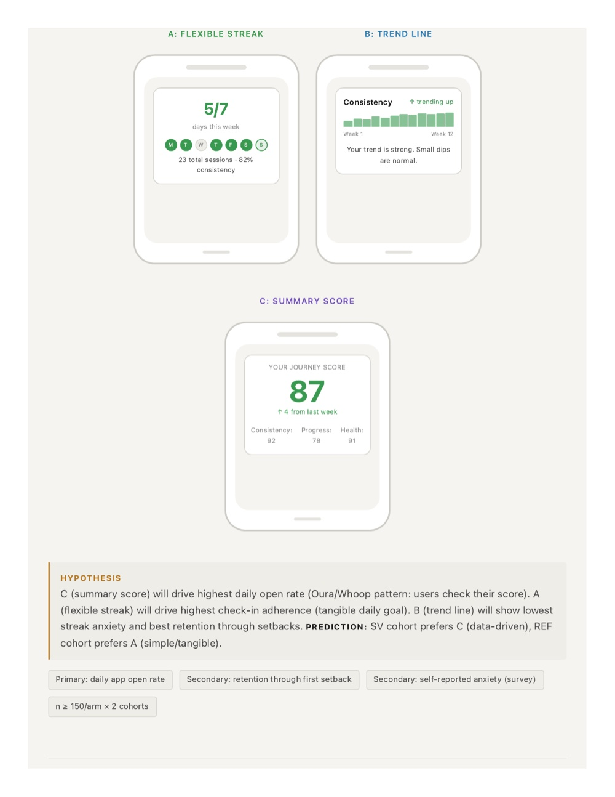
All of it, at the same time.
One system.
A small set of AI tools, named once: Claude Code, Figma Make, Google Stitch, Claude Design.
Close collaboration with the founders and the engineers building around me.
Decisions made in days, not sprints.
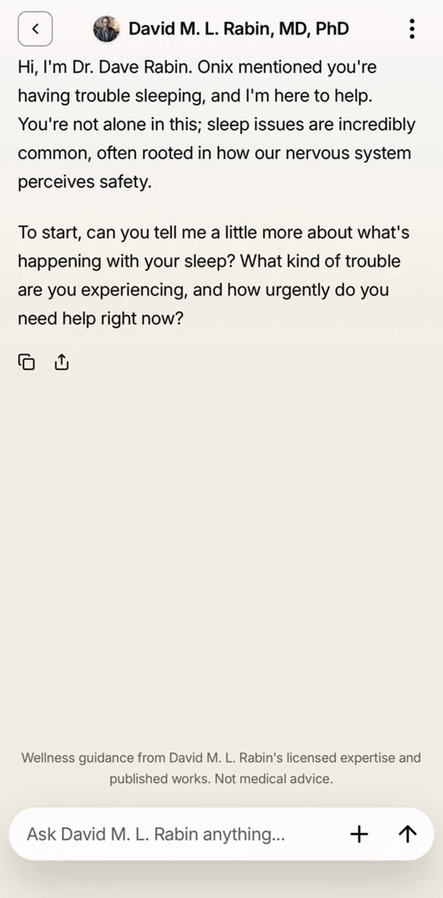
iOS app4 months
- Role
- Design direction, all surfaces
- Tools
- Claude Code, Figma Make, Google Stitch, Claude Design
- Collaborators
- The founders and cross-functional engineers
- Year
- 2026
- Type
- Literata, Inter, DM Mono
More work at flat7.design. Next case study: Soluna. Or write to Mike.